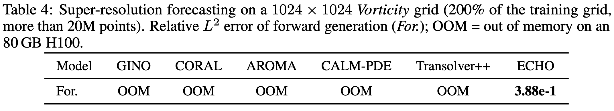
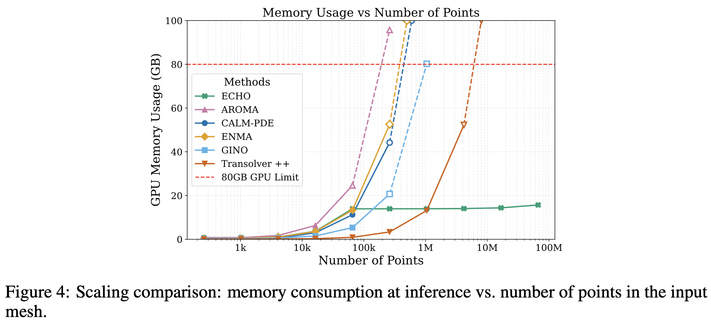

Experimental Results
Scaling
To study the scaling properties of ECHO and other baselines, we
perform two scaling experiments, pushing the models beyond the capacity of our GPU. First, the Table below
presents results for a spatio-temporal forecasting task on our large-scale Vorticity dataset with a
grid size of 1024 ×1024. All baselines ran out of memory on the H100 GPU with 80 GB used for
these experiments; only ECHO scaled successfully. Then, the Figure below shows the memory consumption
at inference for several grid sizes. This figure shows the superior scaling capacity of ECHO as it
surpasses all baselines in term of memory consumption for grid sizes beyond 100k points and scales
up to 100M points.


Study of the process & multi tasking Capabilities
At inference, ECHO addresses multiple tasks in a zero-shot manner. The comparison
is performed on regular grids, where state-of-the-art baselines admit particularly efficient imple-
mentations. We compare against neural solvers trained for time-stepping, the standard approach
for time-dependent PDEs, on forward and backward prediction. We call backward prediction the
generation of the earlier part of a trajectory from its last observed frames. This temporal task differs
from classical PDE inverse problems, which recover unknown coefficients, forcing terms or initial
conditions from observations of the solution. Since the baselines handle one task at a time, we train
them separately for each direction, while ECHO handles both without retraining. For the forward
(resp. backward) task, we use the first (resp. last) 4 timesteps as context and generate all remaining
frames of the trajectory.
Despite operating in a highly compressed latent space, whereas all
baselines except ENMA work directly in physical space without information loss, ECHO achieves
the best overall accuracy, attaining the lowest error on seven of the eight dataset–task pairs. FNO
performs poorly and fails to converge on two of the four datasets. The deterministic version of ECHO
remains competitive across benchmarks, while the generative formulation outperforms it on all eight
dataset–task pairs, highlighting the benefits of stochastic trajectory modeling.
ECHO successfully scales to 3D scenarios compared to existing baselines. Its full-trajectory
generation design accumulates less errors than other baselines and makes it competitive on these
datasets. In particular, we observe that FNO performs very well on first frame generation, but quickly
diverges as the dynamic evolve, whereas ECHO provides consistent prediction along the entire
trajectory.
Study of the Encoder & Decoder Architecture
Following ECHO’s success on regular grids (section 4.1), we now consider demanding
irregular, dense meshes. We compare arbitrary-resolution neural operators that operate in a com-
pressed latent space and can be queried at arbitrary resolutions. Unless stated otherwise, all methods
use matched encoder–decoder compression rates. Each encoder-decoder is first trained and evaluated
on reconstruction to assess physical information preservation. Next, to test latent expressivity on
a forward task, we fix ECHO as the shared processor due to its superior performance

These experiments highlight ECHO’s consistent superiority. While graph and INR approaches fail
to encode these complex dynamics, attention-based AROMA proves powerful on smaller datasets
like Cylinder Flow but struggles scaling to Vorticity due to high memory costs. Conversely, the
convolution-based CALM-PDE handles Vorticity better given its lighter footprint. Alongside ECHO,
this shows that hierarchical convolutional architectures excel on large-scale data. Furthermore,
operating in a spatio-temporally compressed latent space mitigates generation error accumulation.
This is evident on Cylinder Flow: AROMA yields the best reconstruction, yet ECHO achieves higher
forward task accuracy.
Stability on long-range generation
We further illustrate ECHO’s ability to generate long-range predictions beyond the training horizon
on the Vorticity dataset, which exhibits turbulent regimes and the Shallow-Water for generation up to 4 times the training horizon.
The Figure below illustrates that ECHO remains consistent in long-rollouts, even on turbulent dynamics such as the Vorticity PDE.
On Shallow-Water, ECHO is trained on trajectories of length T = 40 time steps, and evaluated in an out-of-distribution regime up to 4T = 160.
The moderate and monotonic degradation indicates that ECHO produces stable long-range forecasts even when extrapolating four times beyond its training horizon.
Probabilistic analysis
Single-sample errors do not assess the predictive distribution of
a generative model. We therefore sample 16 trajectories per test case and report three standard probabilistic metrics, together with the relative L2 error of the ensemble mean. The CRPS, in its fair
ensemble form, is a proper scoring rule that evaluates the full predictive distribution. The RMSCE
(root mean squared calibration error) measures the gap between nominal and empirical coverage of
the ensemble quantiles. The SSR (spread-skill ratio, with finite-ensemble correction) compares the
ensemble spread with the error of the ensemble mean: a value of 1 indicates that the spread matches
the realized error, and values below 1 indicate over-confident ensembles.
Forward prediction. On forward prediction (table 20), ECHO is well calibrated, with RMSCE
between 9.0×10−2 and 1.7×10−1 and SSR between 0.67 and 0.93. ENMA is under-dispersed on
every system, with SSR between 0.12 and 0.53, meaning that its ensembles are over-confident relative
to their realized error. ENMA obtains a slightly lower CRPS on Rayleigh-Bénard; on the three other
systems, ECHO is better on all four metrics.
Backward prediction. Backward prediction can be ill-posed, since several earlier states may be
consistent with the observed frames, which makes the calibration of the ensembles the relevant
property. Backward performance of ECHO is close to its forward performance on all four systems,
with CRPS increasing by 1% (Active Matter) to 25% (Rayleigh-Bénard). The backward ensembles
are well calibrated, with RMSCE between 4.8×10−2 and 1.3×10−1 and SSR between 0.80 and 1.06:
the predicted spread reflects the actual uncertainty of the reconstruction.
Additional Results
Our paper presents a comprehensive analysis of ECHO and its capabilities.
We deeply study the architecture of ECHO and its performance on various benchmarks.
To this end, we provide :
-
Out-of-distribution evaluation on the Vorticity equation: we evaluate the OOD capacities
of ECHO on new unseen physical parameters.
-
Generative trajectory sampling in an unconditional setting on Shallow-Water, including
Fréchet Physics Distance (FPD) and efficiency metrics.
-
Initial value problem (IVP) evaluation, where ECHO generates full trajectories from a
single initial frame and PDE parameters.
-
Temporal interpolation tasks, in which ECHO reconstructs long missing segments between
observed frames across four datasets.
-
Encoding sparse data / spatial interpolation, where only 50% or 10% of the input grid
is observed and the full grid must be reconstructed, with 10% constituting a strong OOD
sparsity level.
-
In addition, we provide a set of ablation studies analyzing:
-
the impact of hierarchical compression depth in the encoder on reconstruction accuracy;
-
the contribution of the refinement stage for full-resolution Vorticity reconstruction;
-
the robustness of the flow-matching generative process to the choice of ODE solver and
number of integration steps at sampling time.
Please refer to the paper for these additional expriments and analysis.


.png)